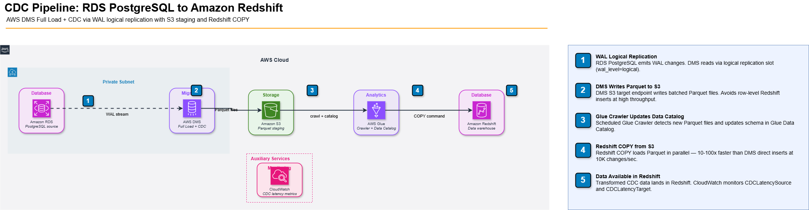

CDC with AWS DMS: RDS to Redshift Real-Time Replication
The replication lag that killed our SLA
The DMS task looked clean in staging. Default settings, no complaints, we cut over to production. About six hours in, the analytics team started pinging us — their Redshift queries were returning data from that morning. Four-hour-old data. The task was still running. CloudWatch showed green. It wasn't until someone actually pulled up CDCLatencySource that we saw it: lag had been climbing from the moment we went live.
That right there is the most common DMS failure mode in production — everything looks fine until it doesn't. The task is alive, replication is technically happening, but latency quietly piles up in the background. This post is about the configs, the LOB gotchas, and the schema drift patterns I wish we'd known before that first cutover.
What DMS CDC actually does (and what it doesn't)
AWS Database Migration Service in CDC mode reads from the database's transaction log — the WAL in PostgreSQL — and replays those changes to the target. It does not query the source tables directly during replication. This means schema changes are not automatically captured unless you configure them explicitly.
DMS supports three modes: Full Load (one-time bulk copy), CDC Only (ongoing changes from a start position), and Full Load + CDC (bulk copy followed by continuous replication). For most production pipelines, Full Load + CDC is the right choice — it ensures you start from a consistent snapshot before streaming changes.
DMS reads PostgreSQL WAL via logical replication. You must set wal_level = logical on the source RDS instance and create a replication slot. Each open replication slot holds WAL segments on disk — if DMS pauses for hours, your source storage fills up.
PostgreSQL prerequisites
-- Required parameter group settings on RDS PostgreSQL
-- wal_level = logical
-- max_replication_slots = 10 (minimum 1 per DMS task)
-- max_wal_senders = 10
-- Verify replication slots
SELECT slot_name, plugin, active, restart_lsn
FROM pg_replication_slots;
-- A DMS slot named "dms_slot" should appear after task start
-- If inactive AND restart_lsn is old, your WAL disk usage is growingThe LOB column problem
Large Object (LOB) columns — TEXT, BYTEA, JSONB over 32KB — are the single most common cause of DMS performance degradation. By default, DMS handles LOBs in "Limited LOB Mode" with a 32KB truncation limit. Any JSON payload over 32KB gets silently truncated at the target.
You have three options. Limited LOB Mode (default): fast, truncates at your configured limit. Full LOB Mode: fetches the entire column value, row by row — 5–10× slower than limited mode. Inline LOB Mode: available for source databases that support it; fetches LOBs inline with the row data. For PostgreSQL → Redshift with JSONB columns, inline mode is usually the correct answer.
// DMS Task Settings - LOB configuration
{
"TargetMetadata": {
"LobMaxSize": 65536,
"SupportLobs": true,
"FullLobMode": false,
"InlineLobMaxSize": 65536
},
"FullLoadSettings": {
"TargetTablePrepMode": "DO_NOTHING"
}
}Full LOB Mode fetches each LOB column in a separate SELECT statement per row. At 100K rows with JSONB columns, a full load that would take 4 minutes in Limited LOB Mode can take 45 minutes in Full LOB Mode. Profile your LOB sizes before choosing.
Schema drift: the silent killer
DMS does not propagate DDL changes by default. When a developer adds a column to the source PostgreSQL table, DMS keeps replicating — but the new column is silently dropped. Redshift never sees it. This was the source of a data quality incident that took 3 days to diagnose because the missing column was a nullable field that passed all NOT NULL validations downstream.
DMS does have DDL handling via table-mapping rules, but it requires explicit configuration and only supports a subset of DDL operations (ADD COLUMN, DROP COLUMN, RENAME COLUMN, ALTER COLUMN for data type changes in some engine combinations).
// table-mapping.json — enable DDL propagation
{
"rules": [
{
"rule-type": "selection",
"rule-id": "1",
"rule-name": "select-all",
"object-locator": { "schema-name": "public", "table-name": "%" },
"rule-action": "include"
},
{
"rule-type": "transformation",
"rule-id": "2",
"rule-name": "schema-drift-handler",
"rule-action": "convert-uppercase",
"rule-target": "schema"
}
]
}DMS DDL support for PostgreSQL → Redshift is limited. ALTER TABLE ADD COLUMN is supported. RENAME TABLE is not. Type changes from INTEGER to BIGINT will silently fail if Redshift has already created the column. Always test DDL operations in staging before relying on automatic propagation in production.
Architecture: RDS PostgreSQL → DMS → S3 → Redshift
The most reliable pattern for high-throughput CDC is not direct DMS → Redshift. It is DMS → S3 → Redshift COPY. Direct DMS to Redshift uses individual INSERT/UPDATE/DELETE statements — at 10,000 changes/second, Redshift's row-level operation overhead dominates. S3 as an intermediate stage allows batch COPY, which is 10–100× faster for Redshift ingestion.
// CDC pipeline: RDS PostgreSQL → DMS → Redshift via S3

Terraform: DMS replication instance and task
resource "aws_dms_replication_instance" "main" {
replication_instance_id = "prod-cdc-instance"
replication_instance_class = "dms.r5.xlarge"
allocated_storage = 100
multi_az = true
publicly_accessible = false
vpc_security_group_ids = [aws_security_group.dms.id]
replication_subnet_group_id = aws_dms_replication_subnet_group.main.id
}
resource "aws_dms_replication_task" "rds_to_s3" {
replication_task_id = "rds-postgres-to-s3-cdc"
migration_type = "full-load-and-cdc"
replication_instance_arn = aws_dms_replication_instance.main.replication_instance_arn
source_endpoint_arn = aws_dms_endpoint.postgres_source.endpoint_arn
target_endpoint_arn = aws_dms_endpoint.s3_target.endpoint_arn
replication_task_settings = jsonencode({
TargetMetadata = {
SupportLobs = true
FullLobMode = false
LobMaxSize = 65536
InlineLobMaxSize = 65536
}
FullLoadSettings = {
TargetTablePrepMode = "DO_NOTHING"
MaxFullLoadSubTasks = 8
}
Logging = {
EnableLogging = true
LogComponents = [
{ Id = "SOURCE_UNLOAD", Severity = "LOGGER_SEVERITY_DEFAULT" },
{ Id = "TARGET_LOAD", Severity = "LOGGER_SEVERITY_DEFAULT" },
{ Id = "TASK_MANAGER", Severity = "LOGGER_SEVERITY_DEFAULT" }
]
}
})
}Replication lag: the metrics that matter
DMS publishes four CloudWatch metrics for CDC lag. Most teams only watch CDCLatencySource (time between a change in the source and DMS reading it) and miss CDCLatencyTarget (time between DMS reading a change and writing it to the target). The real end-to-end latency is the sum of both.
| Metric | What it measures | Alert threshold |
|---|---|---|
| CDCLatencySource | WAL read lag (source side) | > 60s |
| CDCLatencyTarget | Write lag (target side) | > 120s |
| CDCThroughputRowsSource | Rows read per second | < 100 sustained |
| CDCThroughputRowsTarget | Rows written per second | Drops without source drop |
Set CloudWatch alarms on both CDCLatencySource and CDCLatencyTarget. A spike in CDCLatencyTarget with flat CDCLatencySource means the target (S3 or Redshift) is the bottleneck — not the source. These require different fixes: S3 endpoint settings vs Redshift COPY batch size.
What DMS costs at production scale
DMS pricing has two components: replication instance hours and data transfer. A dms.r5.xlarge (the minimum recommended for multi-table CDC) costs $0.48/hour — $345/month. Add S3 PUT costs for staging files ($0.005 per 1,000 requests) and Redshift COPY compute. For a pipeline processing 50M changes/day, expect $450–600/month total for DMS + S3 staging.
DMS charges even when the task is stopped — you pay for the replication instance regardless of task state. Delete the replication instance (not just pause the task) during extended maintenance windows to avoid unnecessary charges.
When DMS is the wrong tool
DMS is the right choice when your source is RDS or Aurora and your target is a supported AWS service. It is the wrong choice when: (1) your source has >1,000 tables — DMS task management at scale becomes a full-time job; (2) you need sub-second latency — DMS delivers 2–15 second latency under load, not milliseconds; (3) you need to transform data during replication — use Glue or a Kafka-based pipeline instead. For Oracle → Redshift migrations with complex transformations, Debezium on MSK Connect gives more flexibility at similar cost.